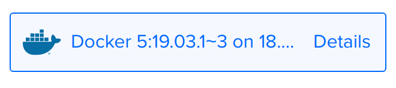

Welcome to the roaring 20's! I wanted to highlight a mantra I have been saying in the last couple of months, "The physical world and the digital world are one".
Skadi is an interesting compilation of tools made by Alan Orlikoski to aid folks in Incident Response. While this is not a tool for Digital Forensics, as it does write to disk in the process, it does help build a system loaded with tools to aid an IR team member without the headache of setting up each tool individually.
The short version is, by utilizing two scripts, you can be up and running in about 10 minutes. Alan has number of ways to get this running, from Docker, Vagrant to OVA on his GitHub. I chose to use the Docker version on Digital Ocean because I didn't want to download and run a VM locally with 4+ GB RAM, 8 Cores and 100+ GB free space. Instead, I went to Digital Ocean and created a VM from the marketplace with those specifications.
After the VM is made, update it and then download the first of two files you will need to get this built. I chose to use the more secure installer that create randomly generated usernames and passwords to prevent outsiders from using default credentials to get into the system.
When the script ends, you will be presented with unique credentials that you will need to login and proceed from. Make sure you save them for your reference!
In order to ensure confidentiality (remember that from the fundamentals of Security?) you should secure the site with a certificate from Let's Encrypt. To do this, first register the server with your domain (like domains.google) and then run the second script found in the /scripts folder called "secure_network.sh". Provide the FQDN for the box and in a couple of minutes, you are done setting up your box! Now you can use the CyLR tool to create a zip file, upload it via ssh and get analyzing.
This was an interesting demo. Chris Navarrete, the presenter and creator of the program, quickly demonstrated his creation to us. Slides and manuals are found on this GitHub. This tool looks to be a local tools, not meant to run in the cloud yet to perform malware analysis and redirect traffic to let malware run and see what its up to, looking at files created, processes and network connectivity while rerouting everything to a control center like a botnet. It does implement Virtualbox (sorry VMware folks) but I can see how it can work on both. Take a look at the tool and implement it. This is one of those tools that may find their way into my courses.
Moloch is a packet capture tool that grants packet visiblity with graphs, charts, maps and more. It looks like a possible replacement to Wireshark to aid in Incident Response. The demo they have is interesting; definetly another tool that will see itself in class.
Marco Palacios mentioned two tools that have been on the back burner, Suricata and The Hive Project. I think The Hive Project will find itself being utilized in one of the Bay Area Regional competitions (hint hint).
"Hackers are free people, just like artists who wake up in the morning in a good mood and start painting," Vladimir Putin